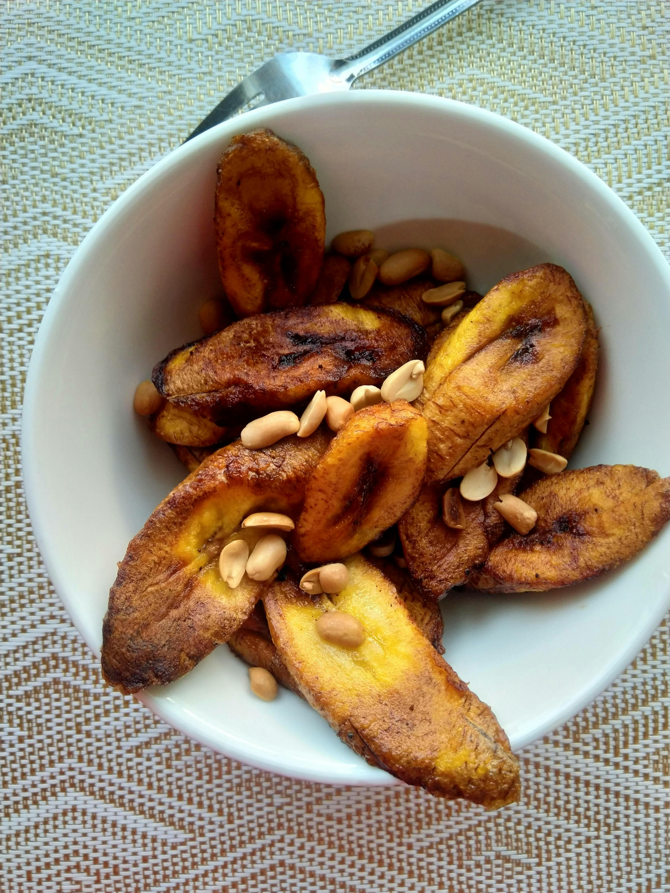

Plantains
Home

Description
A step-by-step recipe on how to cook authetnic
Cuban fried sweet plantains. This easy-to-follow
recipe can be completed in less than 15 minutes.
Ingredients
- Plantains
- Salt
- Cooking oil
Steps
- Peel ripe plantains
- Cut peeled plantain into diagnoalshapes
- Heat a pan on medium-high heat with just enough oil to cover the bottom
- Shallow fry plantains, 3-5 minutes each side until golden
- Remove plantains from pan and season with salt